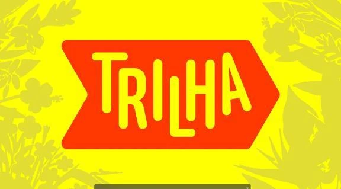
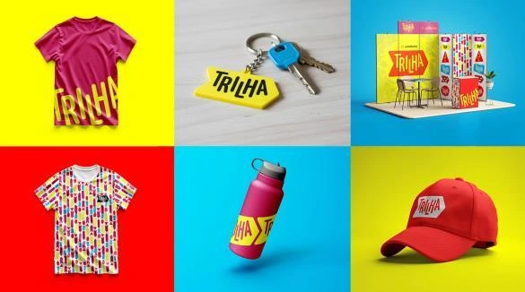
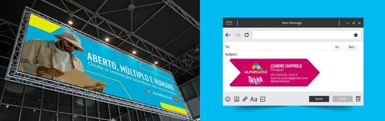

Hub Alpargatas
Este projeto nasceu da proposta de criar a identidade visual de um hub de inovação para a Alpargatas, partindo de suas origens e de seu legado. O ponto de partida foi a Mooca, território marcado pelos trilhos, pelo movimento e pelo trabalho.
A estética foi construída a partir da metáfora dos trilhos como elementos de conexão e transformação. Assim como diferentes caminhos podem se cruzar e levar a novos destinos, a inovação também surge do encontro entre ideias, pessoas e possibilidades.
O projeto busca representar esse movimento de forma visual, criando uma identidade capaz de acompanhar diferentes trajetórias e experiências dentro do hub. Os trilhos deixam de representar apenas um percurso físico e passam a simbolizar descoberta, aprendizado e construção coletiva.
Assim, a identidade não funciona apenas como uma representação do espaço, mas como um sistema que valoriza o processo de inovar. Entre caminhos, conexões e novos destinos, o projeto reforça a ideia de que cada percurso contribui para construir o futuro e deixar um legado para quem vem depois.


